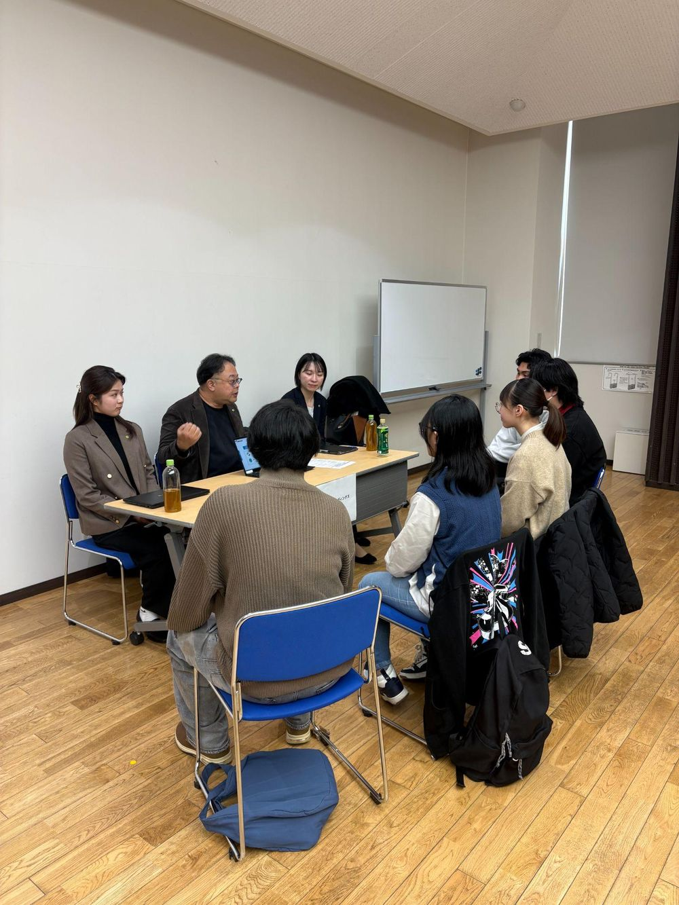
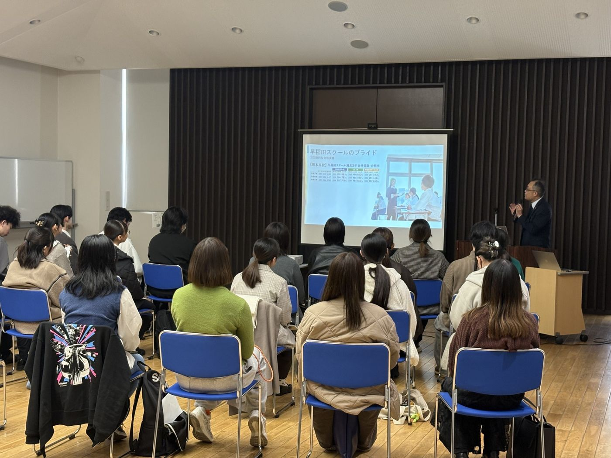
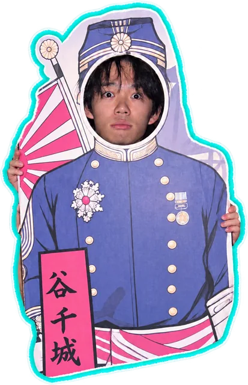

about
熊本の大学生が、
自分たちで動かす支部です。
ドットジェイピーは、1998年に始まったNPO法人です。若者が社会に参加するきっかけをつくるため、全国でインターンシップなどの活動を続けています。2025年10月からは就活支援も始め、熊本を中心に九州・沖縄で合同説明会や企業インターンを行っています。
熊本企業支部は、その中で「就活」と「企業」に関わる活動をしている支部です。企業への営業から、学生への案内、イベントの企画・運営まで、すべて大学生のメンバーで行っています。
目指しているのは、「就活といえばドットジェイピー」と思ってもらえること。就活の入口になるだけでなく、ひとりひとりの就活に最後まで寄り添います。
- メンバー
- 15人
- 大学
- 5校
- チーム
- 6つ
- 企業営業クライアント
- 学生集客コンシューマー
- イベント企画プログラム
- 広報・SNSマーケティング
- 事務・実績管理事務局
- メンバー支援人事
ドットジェイピー全体の実績
- 活動拠点
- 32都道府県
- 学生スタッフ
- 約500人
- 年間のインターン生
- 約2,260人
- これまでのインターン生
- 約4.5万人
activities
私たちがやっていること
-
01
合同説明会
企業の担当者と学生が、直接話せる場をつくっています。企業への案内から、学生の集客、当日の運営まで、すべて学生が担当しています。
日程と申し込み -
02
プレキャリ
キャリアアドバイザーと面談しながら、自己分析や就活の準備を進められるサービスです。自分に合う企業の紹介も行っています。
くわしく見る -
03
企業インターン
インターン生を受け入れたい企業と、実際の仕事を経験してみたい学生をつなぎます。
最新情報はInstagramで
event
企業の人と、直接話せる
合同説明会。
企業の担当者から仕事の話を聞いて、気になったことをその場で質問できるイベントです。ネットだけでは分からない話にふれて、自分の働き方を考えるきっかけにしてください。
- 対象
- 大学3年生（2028年3月卒業予定）
- 参加費
- 無料
- 規模
- 学生 約30人・企業 約5社（回によって変わります）
- 時間
- 14:00〜17:00
- 申し込み
- Googleフォームから（複数の日程を選べます）

当日の流れ
- 01
受付・オープニング
当日の流れを説明して、スタートします。
- 02
企業プレゼン（1社5分）
参加企業が、事業や仕事の内容を順番に紹介します。気になったことはメモしておきましょう。
- 03
交流会（1社20分ずつ）
少人数で企業のブースを回り、担当者に直接質問できます。全部の企業と話せる時間があります。
- 04
アンケート・閉会
感じたことを振り返って、終了です。
※流れは予定です。回によって変わることがあります。
開催日程
お知らせ11月28日（土）の合同説明会は中止になりました。ほかの日程は予定どおり開催します。
- 新産住拓 TOBIRA loungeこの回は中止になりました中止
- 株式会社think garbage14:00〜17:00受付中
- 熊本市流通情報会館502研修室｜14:00〜17:00受付中
- 熊本市流通情報会館501研修室｜14:00〜17:00受付中
- 会場は決まり次第お知らせします14:00〜17:00受付中
- 熊本森都心プラザA・B会議室｜14:00〜17:00受付中
- 熊本国際交流会館4F 第3会議室｜14:00〜17:00受付中
Googleフォームが開きます。参加したい日程を選んで送信してください。複数の日程に参加でき、回ごとに話せる企業や内容が変わります。
precari
ひとりで悩まない就活を。
プレキャリ
キャリアアドバイザーと話しながら、自己分析や就活の準備を進められるサービスです。「強みが分からない」「やりたい仕事が見つからない」そんな悩みを、いっしょに整理します。
- 対象
- 大学3年生（28卒）
- 利用料
- 0円
- 申し込み
- LINEから
- 1下のボタンからLINEを友だち追加
- 2「プレキャリ」とメッセージを送る
- 3担当スタッフから面談の案内が届く
- 1
1回きりじゃない
何度も面談しながら、いっしょに深掘りします。
- 2
ESや面接で使える言葉に
ガクチカや自己PRを、伝わる言葉に整えます。
- 3
自分に合う企業に出会える
自己分析の結果から、合いそうな企業を紹介・推薦します。
面談の前にメモしておくと話しやすいこと
- 大学生活でがんばったこと3つ
- 楽しかった経験・悔しかった経験
- 少しでも気になる業界・会社

voices
合同説明会に参加した
先輩たちの声
98%の参加学生が「また参加したい」と回答（過去の開催のアンケートより）
今までは知らなかった企業や機関の仕事内容を知ることができて、興味が湧いた。
普段企業について知ろうと思ってもインターネットで知るしかないが、直接話を聞けたことが良かった。
今まで興味のなかった公務員にも興味が出て、今後の選択肢が増えた。
まだまだ知らない職業や知らない面があると気づけた。
members
熊本の5大学から集まった、
15人のメンバー
合同説明会の会場や、プレキャリの面談で会えるかもしれません。気軽に話しかけてください。
横にスワイプして全員を見られます →
あさひ
熊本学園大学
好奇心旺盛で、いろんなことを聞きたがります
いちり
九州ルーテル学院大学
目標は、熊本企業支部の基盤をつくり切ること
しょうご
熊本大学
みんなの良さを引き出せる人になりたい
しょうと
熊本学園大学
やろうと決めたら、すぐ行動します

しょうへい
熊本学園大学
相手のノリに合わせて話せます。仲良くなりたいです！
しょうま
熊本学園大学
好奇心旺盛・真面目・ポジティブ
そうご
熊本県立大学
楽しいが最優先！
そら
崇城大学
裏で活躍するのが得意です
ちょうせい
熊本学園大学
マネジメントの力を高めるのが目標
りょう
熊本県立大学
話すことと、体を動かすことが好き
ひめの
熊本県立大学
空気を読むのが得意です
もか
熊本学園大学
やったことのない、新しいことに挑戦します
ゆうと
熊本県立大学
なんでもおもしろいと考えるようにしています
ゆづき
熊本学園大学
社会人とも緊張せずに話せるようになりたい
ゆりあ
熊本県立大学
何事も挑戦から！
for companies
企業の皆さまへ
私たちは、合同説明会に参加していただくことをゴールにはしていません。目指しているのは、企業さまの採用のお悩みを、学生の目線もいかしながら一緒に解決することです。
- 01
合同説明会への出展
熊本で、大学3年生（28卒）と直接話せる場をつくります。企業さまのご紹介と、学生との質問・交流の時間があります。
- 02
インターン生の受け入れ
実際の仕事を経験してみたい学生と、インターン生を受け入れたい企業さまをおつなぎします。
- 03
プレキャリを通じたご紹介
キャリアアドバイザーとの面談で自己分析を深めた学生に、合いそうな企業さまをご紹介します。
こんなお悩みはありませんか？
- 若手・学生への採用のアプローチがうまくいかない
- Z世代の価値観や関心がつかめない
- 説明会に出ても、学生の反応が薄いと感じる
- 意欲の高い学生と出会えていない
合同説明会の特長
- 学生約30人に、プレゼン（5分）と交流会（20分）で確実にPRできます
- 熊本大学・熊本県立大学・熊本学園大学・九州ルーテル学院大学などの学生が参加
- 気になった学生を、自社の選考へご案内できます
- 開催後に、参加学生のアンケート結果をお渡しします
多くの企業様、学生とコミュニケーションができる場であり、非常にありがたい機会だった。
ご相談・資料のご請求はこちら
出展やインターンの受け入れについて、お気軽にお問い合わせください。
faq
よくある質問
Q誰が参加できますか？
合同説明会もプレキャリも、主に大学3年生（2028年3月卒業予定）の人に向けたものです。
Q合同説明会の参加費はかかりますか？
無料です。
Q合同説明会は何回参加してもいいですか？
はい、複数の日程に参加できます。回ごとに話せる企業や内容が変わります。
Q合同説明会の申し込み方法は？
このページの「合同説明会に申し込む」ボタンからGoogleフォームを開き、参加したい日程を選んで送信してください。
Qどんな企業が参加しますか？
回ごとに参加する企業が変わります。最新の情報は公式Instagramをチェックしてください。
Qプレキャリにお金はかかりますか？
利用料は0円です。
Qまだ就活のことが何も分かりません。
大丈夫です。何から始めればいいか分からない段階でも、プレキャリの面談でいっしょに整理できます。
contact